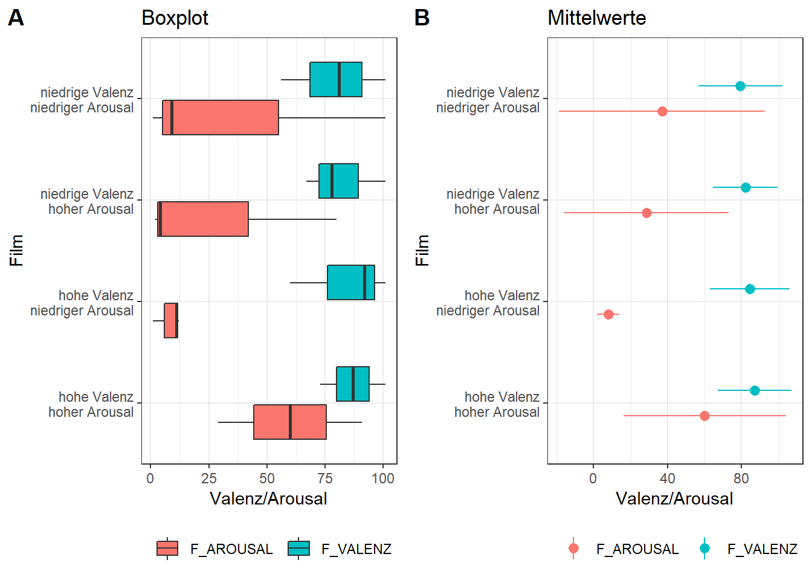

#install.packages("data.table")
#install.packages("dplyr")
#install.packages("ggplot2")
#install.packages("ggstatsplot")
#install.packages("reshape2")
#install.packages("car")
#install.packages("rlang")
#install.packages("Rmisc")
#install.packages("afex")
library(data.table)
library(dplyr)
library(ggplot2)
library (ggstatsplot)
library(reshape2)
library(car)
library(rlang)
library(Rmisc)
library(afex)Daten von soscisurvey von Puls_Fragebogen und Puls_Stimuli importieren.
## csv.-Datei einlesen
ds <- read.csv("puls_data_neu.csv",encoding = "UTF-8",header = TRUE,sep = ";",dec = ",",
row.names = "CASE",as.is = TRUE,check.names = TRUE, fill = TRUE, strip.white = TRUE) ## Welche VPn/IDs haben den Fragebogen ausgefuellt?
ds <- as.data.table(ds)
ds[,unique(PID)]## [1] "hjd" "mdkd" "m1110" "dfdfdf" "dd" "j0405" "l1803"
## [8] "lkkl1221" ## Nur die Daten der Kinder der Pilotstudie behalten
ds <- ds[PID %in% c("m1110", "j0405", "l1803")]
# Wir haben noch 16 Datenreihen: Wer hat eine Datenreihe zu viel?
ds[, .(.N),by = PID]# PID j0405## PID N
## 1: m1110 5
## 2: j0405 6
## 3: l1803 5 # Die Datenreihe ohne Zeitangaben (mit der Filmreihenfolge 1423) loeschen
ds <- ds[PID == "j0405" & FF03 == "1423" |is.na(FF03)== TRUE | PID == "m1110" | PID == "l1803"]Achtung: Das Umwandeln der Daten ins Wide-format setzt voraus, dass jede ID genau 5 Datenreihen hat (4 x Filmfragebogen, 1 x Pulsfragebogen).Dies haben wir im vorigen Schritt kontrolliert. Weitere fehlende Werte werden erst nach der Umwandlung ins Wide-fromat vorgenommen.
## Benoetigte Objekte/Data.frames
# Einzelne Data.frames fuer Filmfragebogen und Puls_stimuli erstellen
#ds <- as.data.table(ds)
data_ff <- ds[QUESTNNR == "Puls_Fragebogen"]
data_stim <- ds[QUESTNNR == "Puls_Stimuli"]
# Liste mit den Filmen erstellen
# Filme Film 1 = Dschungelbuch (high Valence, low Arousal: hVal_lAro) ,
# Film 2 = Schneewittchen (low Valence, high Arousal: lVal_hAro)
# Film 3 = Aladin (high Valence, high Arousal: hVal_hAro)
# Film 4 = Koenig der Loewen (low Valence, high Arousal: lVal_lAro)
keys <- c('hVal_lAro', 'lVal_hAro', 'hVal_hAro', 'lVal_lAro')
# Neuen Data.frame "all" erstellen
all <- data.frame()
# Liste aus allen verwendeten IDs erstellen
# (jede ID nur einmal, keine NAs)
ids <- unique(data_ff$PID)
ids = ids[!is.na(ids)]
## Loop erstellen
for(id in ids) {
# Zeile von Pulsstimuli pro ID (erhaelt die Filmreihenfolge)
rflg <- dplyr::filter(data_stim, PID==id)
if(nrow(rflg)!=1) {next} # Kontrolle: ein Pulsstimulus-Fragebogen pro ID?
# Filmreihenfolge rausnehmen
rflg <- rflg[[1,'FF03']]
# Umwandeln der Filmreihenfolge in eine Liste
rflg <- unlist(strsplit(as.character(rflg), split=''))
#
rflg <- lapply(rflg, FUN=function(i) {return(keys[as.integer(i)])})
# Zeilen von Filmfragebogen pro ID
p <- dplyr::filter(data_ff, PID==id)
if(nrow(p)!=4) {next} # Kontrolle: 4 Filmfrageboegen pro ID?
p <- p[order(p$IV02_02),] # Kontrolle: Filme in der richtigen Reihenfolge?
# Neue Variable "FILM" erstellen und p hinzufuegen
p['FILM'] <- unlist(rflg)
# p pro ID zusammenfuegen
all <- rbind(all, p)}Folgende Tabelle zeigt, wo sich fehlende Werte in den für uns relevanten Variablen befinden. Das Kind mit der ID j0405 hat einen Film nicht/nicht vollständig bearbeitet. Zwei Kinder (ID j0405 und ID m1110) haben für jeweils einen Film kein konkretes Gefühl angegeben.
## NAs in den fuer uns relevanten Spalten
all <- as.data.table(all)
all[is.na(F_KNOWN) == TRUE| is.na(F_EMOTION) == TRUE|is.na(F_VALENZ) == TRUE|is.na(F_AROUSAL) ==
TRUE,.(PID,FILM,F_KNOWN,F_EMOTION,F_VALENZ,F_AROUSAL,FINISHED)]## PID FILM F_KNOWN F_EMOTION F_VALENZ F_AROUSAL FINISHED
## 1: m1110 lVal_lAro 2 NA 56 1 1
## 2: j0405 hVal_lAro 2 NA 92 12 1
## 3: j0405 hVal_hAro NA NA NA NA 0 ## nur beendete Frageboegen verwenden
# wir nehmen die Datenreihe von PID j0405 fuer den Film hVal_hAro raus
all <- all[!(PID == "j0405" & FILM == "hVal_hAro")]Die folgende Tabelle zeigt pro Film an, wie viele Kindern den jeweiligen Film kannten.
## (Variable F_KNOWN) 1 = bekannt, 2 = unbekannt
all <- as.data.table(all)
all$F_KNOWN <- factor(all$F_KNOWN)
all[,F_KNOWN := dplyr::recode(F_KNOWN,"1" = "bekannt", "2" = "unbekannt")]
table(all$F_KNOWN, all$FILM)##
## hVal_hAro hVal_lAro lVal_hAro lVal_lAro
## bekannt 1 2 0 1
## unbekannt 1 1 3 2Wie fühlst du dich?
Wie aufgeregt bist du?
# Valenz ("Wie fuehlst du dich?") (1/traurig - 101/froehlich) (Variable F_VALENZ)
# Arousal ("Wie aufgeregt fuehlst du dich?") (1/entspannt - 101/aufgeregt) (Variable F_AROUSAL)
states <- all[,.(Mittelwert_Valenz = round(mean(F_VALENZ,na.rm = TRUE),2), Mittelwert_Arousal = round(mean(F_AROUSAL,na.rm = TRUE),2)), by = FILM]
states## FILM Mittelwert_Valenz Mittelwert_Arousal
## 1: hVal_hAro 87.00 60.00
## 2: lVal_hAro 82.00 28.67
## 3: lVal_lAro 79.33 37.00
## 4: hVal_lAro 84.33 8.00 ## Daten fuer die bessere Verwendung von ggplot2 in Long-format bringen
all_long <- melt(all,id.vars="FILM", measure.vars=c("F_AROUSAL","F_VALENZ"))
## Boxplot erstellen
ValAr_boxplot <- ggplot(data = all_long) +
geom_boxplot(aes(x = FILM, y = value, fill = variable)) +
labs( title = "Boxplot", x = "Film", y = "Valenz/Arousal") +
scale_x_discrete(labels = c("hVal_hAro" = "hohe Valenz\nhoher Arousal",
"hVal_lAro" = "hohe Valenz\nniedriger Arousal","lVal_hAro" = "niedrige Valenz\nhoher Arousal",
"lVal_lAro" = "niedrige Valenz\nniedriger Arousal")) +
coord_flip() +
theme_bw() +
theme(legend.position = "bottom", legend.title = element_blank())
## Mittelwerte und Standardabweichung
# Uebersicht ueber Mittelwerte, Konfidenzintervalle und Standardabweichung erstellen
summary <- summarySE(all_long, measurevar="value", groupvars= c("variable","FILM"),na.rm = TRUE)
# Visualisierung der Mittelwerte mit Standardabweichung
ValAr_mwert <- ggplot(data = summary, aes(x = FILM, y = value, fill = variable, col = variable,
ymin = value + sd, ymax = value - sd)) +
geom_pointrange(position = position_dodge(0.5)) +
labs( title = "Mittelwerte", x = "Film", y = "Valenz/Arousal") +
scale_x_discrete(labels = c("hVal_hAro" = "hohe Valenz\nhoher Arousal",
"hVal_lAro" = "hohe Valenz\nniedriger Arousal","lVal_hAro" = "niedrige Valenz\nhoher Arousal",
"lVal_lAro" = "niedrige Valenz\nniedriger Arousal")) +
coord_flip() +
theme_bw()+
theme(legend.position = "bottom", legend.title = element_blank())
## Plots nebeneinander anzeigen
combine_plots(ValAr_boxplot, ValAr_mwert, ncol = 2, nrow=1,labels = c("A", "B"), common.legend = TRUE, caption.color = "black")
shapiro.test(all$F_VALENZ)##
## Shapiro-Wilk normality test
##
## data: all$F_VALENZ
## W = 0.87717, p-value = 0.09576 shapiro.test(all$F_AROUSAL)##
## Shapiro-Wilk normality test
##
## data: all$F_AROUSAL
## W = 0.74125, p-value = 0.001599Die ANOVA testet auch auf Sphärizität, kann aber noch nicht komplett durchgeführt werden, da wir fehlende Werte haben (s.o.)
# PID in Faktor umwandeln
all$PID <- as.factor(all$PID)
# ANOVA durchfuehren
result_anova_valence <- aov_ez(data = all, dv = "F_VALENZ", id = "PID", within = "FILM")
summary(result_anova_valence)##
## Univariate Type III Repeated-Measures ANOVA Assuming Sphericity
##
## Sum Sq num Df Error SS den Df F value Pr(>F)
## (Intercept) 54450 1 2738 1 19.887 0.1404
## FILM 85 3 85 3 1.000 0.5000 result_anova_arousal <- aov_ez(data = all, dv = "F_AROUSAL", id = "PID", within = "FILM")
summary(result_anova_arousal)##
## Univariate Type III Repeated-Measures ANOVA Assuming Sphericity
##
## Sum Sq num Df Error SS den Df F value Pr(>F)
## (Intercept) 12482 1 7812.5 1 1.5977 0.4261
## FILM 3354 3 2201.5 3 1.5235 0.3689Die folgende Tabelle zeigt pro Film an, wie viele Kinder welches Gefühl gewählt haben.
##Welches Gefuehl? (1 = Wuetend, 2 = Ueberrascht, 3 = Traurig, 4 = Aengstlich, 5 = Froehlich, -1 = kein Gefuehl)
all[,F_EMOTION := dplyr::recode(F_EMOTION,"1" = "Wuetend", "2" = "Ueberrascht", "3" = "Traurig", "4" = "Aengstlich",
"5" = "Froehlich", "-1" = "kein Gefuehl")]
table(all$F_EMOTION, all$FILM)##
## hVal_hAro hVal_lAro lVal_hAro lVal_lAro
## Froehlich 2 2 3 1
## Traurig 0 0 0 1